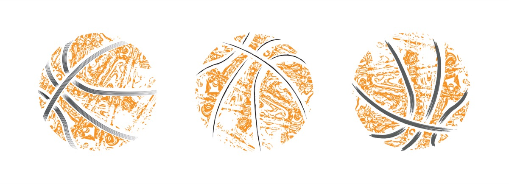
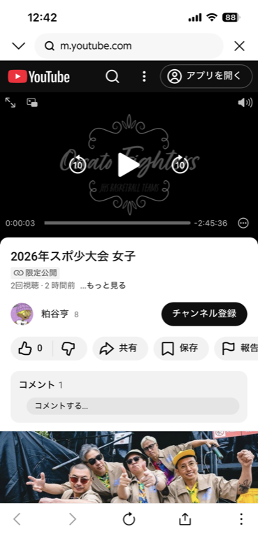
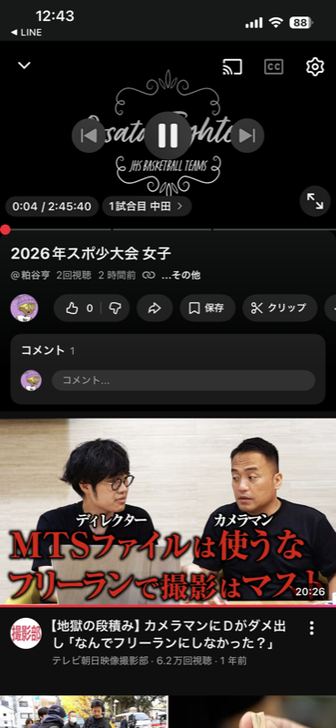

・リモコンに「YouTube」ボタンがある
・Fire TV StickやChromecastがある
・ゲーム機（Switch等）が繋がっている
上記いずれかに当てはまれば「はい」です。
LINEで届いたURLをタップすると、最初はブラウザ（Safari等）で開きます。
ブラウザのままではテレビに飛ばせないので、まずはYouTubeアプリに切り替えましょう。

右上の「アプリを開く」をタップすると
YouTubeアプリに切り替わります
📲 YouTubeアプリで動画を開くと、画面の右上あたりに「テレビと電波マーク」のアイコンが出ることがあります。
これが「キャスト」ボタンです。

右上のテレビ＋電波マークが
キャストボタンです
テレビでYouTubeアプリを開いた時に、左上に自分のアイコンや名前が表示されていれば「ログイン済み」です。
スマホと同じGoogleアカウントならベストです！
Googleアカウント不要で、テレビとスマホを簡単にリンクできる公式機能です。
ログインしなくてもOK！
一度リンクすれば次回から「キャスト」も使えるようになります。